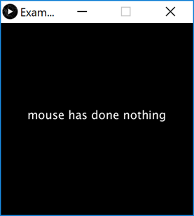

Objectives
methods · mouse event methods · bespoke methods
Understanding mouse event methods
In this step, you will work on the processing example 3.1 from your lectures.
Coding the setup() method
Create a new Processing sketch and call it Example_3_1.
Enter the following code into your sketchbook (don't cut and paste it):
void setup()
{
size(400, 400);
background(0);
textAlign(CENTER);
textSize(24);
fill(255);
text("mouse has done nothing", width/2, height/2);
}Run the code.

You have used a few new methods relating to text. Navigate to the references section of the processing website and read about these methods.
If you are still not fully sure what a particular method is doing, change the actual parameters for it and see the effect on your sketch. When finished, change the parameter back to the original value.
Coding the draw() method
Mouse and keyboard events only work when a program has draw().
Without draw(), the code is only run once and then stops listening for events.
In your open sketch, add the draw() method to it. The body of the method should be empty.
Coding the mouseMoved() method
Add a mouseMoved method that will change the background to a red colour.
Print the following text to the display window (not the console):
- "mouse was moved"
Run your code. Does it work as you would expect when you move the mouse?

Note: the code for this method is here:
void mouseMoved()
{
background(150, 10, 70);
text("mouse was moved", width/2, height/2);
}Coding the mouseDragged() method
Add a mouseDragged method that will change the background to a blue colour.
Print the following text to the display window (not the console):
- "mouse was dragged"
Run your code. Does it work as you would expect when you drag the mouse?
Note: the code for this method is here:
void mouseDragged()
{
background(10, 70, 100);
text("mouse was dragged", width/2, height/2);
}Coding the mouseReleased() method
Add a mouseReleased method that will change the background to a purple colour.
Print the following text to the display window (not the console):
- "mouse was released"
Run your code. Does it work as you would expect when you release the mouse?
Note: the code for this method is here:
void mouseReleased()
{
background(100, 0, 100);
text("mouse was released", width/2, height/2);
}Coding the mousePressed() method
Add a mousePressed method that will change the background to a green colour.
Print the following text to the display window (not the console) when the left button was pressed:
- "mouse was pressed and it was the left button"
Print the following text to the display window (not the console) when the right button was pressed:
- "mouse was pressed and it was the right button"
Run your code. Does it work as you would expect when you press the left and then the right mouse buttons?
Note: the code for this method is here:
void mousePressed()
{
background(100, 100, 0);
text("mouse was pressed", width/2, height/2);
if ( mouseButton == LEFT)
{
text("and it was the left button", width/2, height/2 + 40);
}
if (mouseButton == RIGHT)
{
text("and it was the right button", width/2, height/2 + 40);
}
}Mouse event methods
In last week's examples, 2.5 to 2.8 inclusive, we used the mouse system variables e.g. mousePressed.
In this step, you will re-write that code to use mouse event methods instead e.g. void mousePressed().
You will notice, this time, that we haven't given you the reworked code to type in; have a go at making the code changes yourself and if you need some help, you can refer to your lecture notes (or download the solutions). And don't worry if you have to refer to either the notes or the solutions, you are only three weeks into the course!
Example 2.5
Create a new Processing sketch in your workspace and call it Exercise_2_5_v2.
Cut and paste the following code into your sketchbook:
void setup() {
size(100,100);
}
void draw() {
background(0);
stroke(255);
fill(128);
if (mousePressed){
rect(45,45,34,34);
}
else{
ellipse(45,45,34,34);
}
}Run the code so that you understand exactly what it does.
Rework the code so that it no longer tests the mousePressed variable but uses the void mousePressed() method instead.
Run your code. Does it work as you would expect?
Example 2.6
Create a new Processing sketch in your workspace and call it Exercise_2_6_v2.
Cut and paste the following code into your sketchbook:
void setup() {
size(100,100);
}
void draw() {
background(204);
if (mousePressed == true)
{
fill(255); // white
} else {
fill(0); // black
}
rect(25, 25, 50, 50);
}Run the code so that you understand exactly what it does.
Rework the code so that it no longer tests the mousePressed variable but uses the void mousePressed() method instead.
Run your code. Does it work as you would expect?
Example 2.7
Create a new Processing sketch in your workspace and call it Exercise_2_7_v2.
Cut and paste the following code into your sketchbook:
void setup() {
size(100,100);
}
void draw() {
if (mousePressed){
if (mouseButton == LEFT)
fill(0); // black
else if (mouseButton == RIGHT)
fill(255); // white
}
else {
fill(126); // gray
}
rect(25, 25, 50, 50);
}Run the code so that you understand exactly what it does.
Rework the code so that it no longer tests the mouse system variable but uses the mouse event methods instead.
Run your code. Does it work as you would expect?
Example 2.8
Create a new Processing sketch in your workspace and call it Exercise_2_8_v2.
Cut and paste the following code into your sketchbook:
void setup() {
size(500,400);
background(0);
}
void draw() {
if (mousePressed) {
background(0);
}
stroke(255);
fill(45,45,45);
ellipse(mouseX, mouseY, 100, 100);
}Run the code so that you understand exactly what it does.
Rework the code so that it no longer tests the mouse system variable but uses the mouse event methods instead.
Run your code. Does it work as you would expect?
Writing your own methods
In this step, you will work on reproducing the code examples 3.2 to 3.5 inclusive from your lectures.
Example 3.2
Create a new Processing sketch in your workspace and call it Example_3_2.
Write a method called drawRedSquare that takes no parameters.
The return type for this method is void.
The method body should include the following processing:
- set the fill colour to red.
- draw a square with a length of 60 pixels at the coordinates (70,70).
The drawRedSquare method should be called from the draw() method.
Run your code; a red square should be drawn on the display window.
The solution code is:
void setup()
{
size(200,200);
background(20,70,105);
}
void draw()
{
drawRedSquare();
}
void drawRedSquare()
{
fill(255,0,0);
rect(70,70,60,60);
}Example 3.3
Create a new Processing sketch in your workspace and call it Example_3_3.
Write a method called drawRedSquare that takes one parameter of type int. This parameter will be used to set the length of the square.
The return type for this method is void.
The method body should include the following processing:
- set the fill colour to red.
- draw a square at the coordinates (70,70) and use the int parameter to determine the length of the square.
The drawRedSquare method should be called from the draw() method, passing the value 60 as its argument.
Run your code; a red square should be drawn on the display window.
The solution code is:
void setup()
{
size(200,200);
background(20,70,105);
}
void draw()
{
drawRedSquare(60);
}
void drawRedSquare(int length)
{
fill(255,0,0);
rect(70,70,length, length);
}Example 3.4
Create a new Processing sketch in your workspace and call it Example_3_4.
Write a method called drawRedSquare that takes three parameters. Each of the parameters is of type int:
parameter one represents the length of the square.
parameter two represents the xCoordinate of the square.
parameter three represents the yCoordinate of the square.
The return type for this method is void.
The method body should include the following processing:
set the fill colour to red.
draw a square where:
the length of the square is the value passed as the first parameter into the method.
its coordinates are those that were passed as the second and third arguments to the method.
The drawRedSquare method should be called from the draw() method, passing the values 60, 70, 40 as its arguments.
Run your code; a red square should be drawn on the display window.
The solution code is:
void setup()
{
size(200,200);
background(20,70,105);
}
void draw()
{
drawRedSquare(60, 70, 40);
}
void drawRedSquare(int length, int xCoord, int yCoord)
{
fill(255,0,0);
rect(xCoord,yCoord, length, length);
}Example 3.5
Create a new Processing sketch in your workspace and call it Example_3_5.
Enter the following code into the sketch (don't cut and paste, write it out):
void setup()
{
size(200,200);
background(20,70,105);
}
void draw()
{
for (int i = 1; i < 7; i++)
{
drawRedSquare(25, i*25, i*20);
}
}
void drawRedSquare(int length, int xCoord, int yCoord)
{
fill(255,0,0);
rect(xCoord,yCoord, length, length);
}This code calls the drawRedSquare method multiple times (using a for loop).
Run your code. Does it work as you would expect? Are 6 red squares drawn on the display window?
Now try re-write the for loop so that it is a while loop. Run and test your code again. There should be no changes in the display window.
Writing your own methods
In this step, you will work on reproducing the code example 3.6 from your lectures.
Example 3.6
Create a new Processing sketch in your workspace and call it Example_3_6.
Enter the following code into the sketchbook (don't cut and paste, write it out):
int value = 30;
void setup()
{
int result = timestwo(value);
println(result);
}
int timestwo(int val)
{
val = val * 2;
return val;
}This code calls the timesTwo method from the setup() method. This means that the timesTwo method is only called once.
The timesTwo method takes in a parameter of type int, it multiplies the value of this parameter by 2 and then returns the value back to where the method was called from. It stores the returned value in another variable of type int that is called result. The value of the variable result is printed to the console.
Run your code. Does it work as you would expect? Is the value 60 printed to the console?
Exercises
For each exercise listed below, create a new sketch.
You may need to visit the Processing website for additional information.
Exercise 1
The object of this exercise is to refactor the Example 3.5 code to add a new parameter to the drawRedSquare method. This new parameter will set the stroke of the square.
We will also change the size of the window and the size of the square in this exercise.
The expected output will be:
First, change the size of the display window to (380,340). When you run the code, you will see that the squares are not evenly distributed throughout the window. Make the changes so that the squares are laid out like the above image.
Second, amend the drawRedSquare method so that a stroke value is passed as a parameter. Set the stroke to 5.
Run your code...it should look like the above screenshot.
Exercise 2
Using the solution to Exercise 1, try produce this output:
Note that you can achieve this with just one extra line of code!
Challenges
- You may need to visit the Processing website for additional information.
Challenge 1
Create a new sketch called lab03a_Challenge01.
Enter the following starting code into your sketch (you shouldn't need to make any changes to these methods for this challenge):
void setup()
{
size(400,400);
noStroke();
}
void draw()
{
}Write a mousePressed method that has one line of code in it. This line of code should be a call to the drawTarget method (you will write this next), passing the values 3 and 150 as actual parameters.
Now for the challenge...write a method called drawTarget that returns no data, but takes two paramters of type int.
The first parameter represents the number of circles in the target i.e. size.
The second parameter represents the starting grayscale colour i.e. gray
The only code in this method is a for loop. The loop will execute enough times to draw the number of circles required (determined by size).
This loop should set the fill to the value of gray.
Draw an ellipse at the current mouse coordinates with a diameter starting at 20 and increasing by 20 for each subsequent ellipse drawn.
Increase gray by 30.
Note: remember that the solution is available on the next tab, if you need to look at it.
Challenge 2
Now that you have the code drawing a target with 3 circles, test it so that you can easily draw targets with 6 circles etc. You should only need to change the actual paramter passed in the drawTarget method.
Solutions
The solutions for this lab can be found here.
If you require unzipping software, 7zip is a good choice: http://www.7-zip.org/ (or Keka for Mac http://www.kekaosx.com/en/)
After unzipping the solutions, it might be a good idea to copy the folders to your sketchbook folder. From Processing, you could then use File, followed by Sketchbook to easily open them.